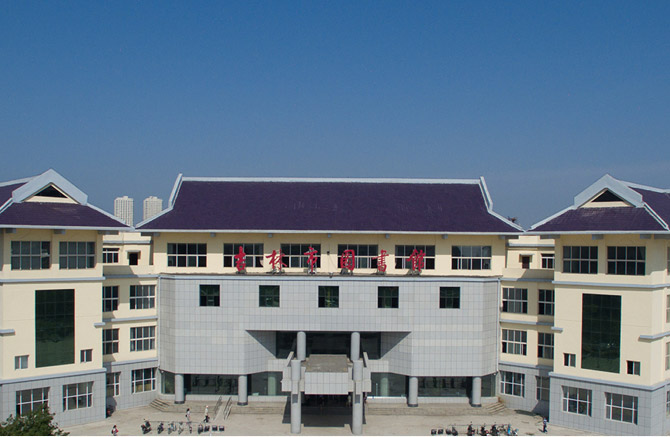

爆竹声声辞旧岁，和风送暖迎新春。为贯彻落实党的十九大精神，进一步丰富城乡群众精神文化生活，推进文化小康建设，在新春佳节即将到来之际，由吉林省图书馆、吉林省音乐家协会主办，吉林省音协群众音乐文化协会承办的2018迎春晚会于1月26日在吉林省图书馆音乐厅精彩上演。
音乐会当天，广大读者欢聚一堂，共迎新春。音乐会以一支欢快的《吉人天相》舞蹈拉开了帷幕，吉林省内知名音乐家、音乐爱好者纷纷登台献艺，整场联欢会节目形式多样，内容丰富，音乐《不忘初心》、《孝敬爹和妈》、《你不来 我不老》、《共圆中国梦》、《咱老百姓》、《雪花飘飘春节到》、《都在我心上》、《为幸福举杯》，歌舞《颁金札兰》、《难忘的那一天》、《荷花情》，京歌《中国脊梁》、二胡齐奏、爵士乐、东北大鼓等精彩节目轮番上场，高潮迭起，欢乐祥和的气氛蔓延到会场的每一个角落。最后，激情飞扬的合唱《歌唱祖国》为此次新春音乐会画上了圆满的句号。
音乐会结束后，观众朋友们纷纷表示意犹未尽，来自吉林大学的张老师说：“非常高兴能在春节前欣赏如此精彩的文化盛宴，在美妙的音乐声中净化心灵，陶冶心志。感谢省图多年来在促进文化繁荣发展，提升城市文化品位上的努力。”
“我们的中国梦”——文化进万家活动是在全国组织开展的一项重点文化惠民活动，该活动以中国梦为主题，以丰富基层群众文化生活为目标，发动全国的文艺工作者在春节期间为百姓送去丰富多彩的精神文化食粮。作为我省公共文化服务的枢纽，吉林省图书馆与吉林省音乐家协会自2017年进行战略合作后，相继举办了多场大型系列公益演出，将丰富多彩的文艺节目送到广大的人民群众中去，满足了人民对美好生活的向往。吉林省图书馆在新的一年将继续深入实施文化惠民工程，推出更多喜闻乐见的文化活动，把丰富人民群众文化精神生活与提高人民群众文化素养相结合，为打造吉林省特色文化品牌、提升城市文化品质、促进文化大繁荣大发展献计出力。